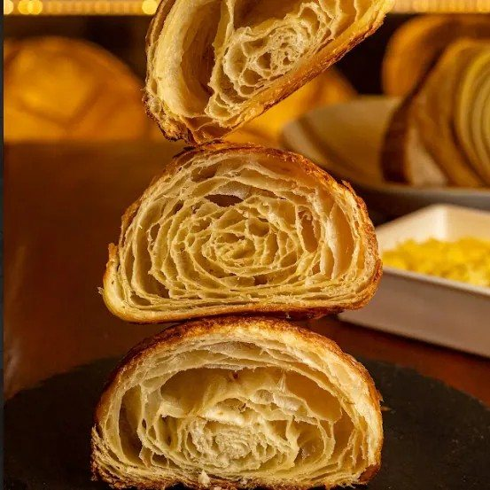
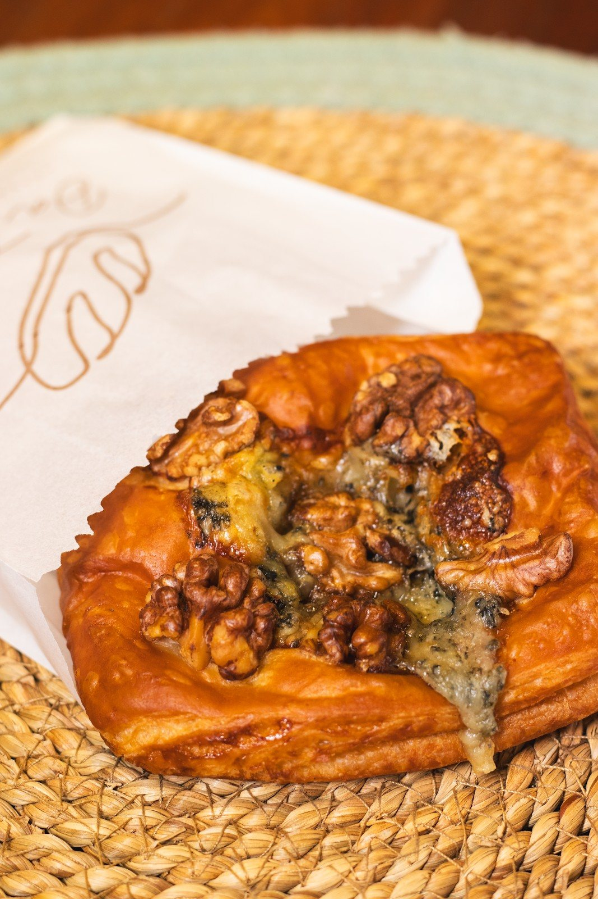
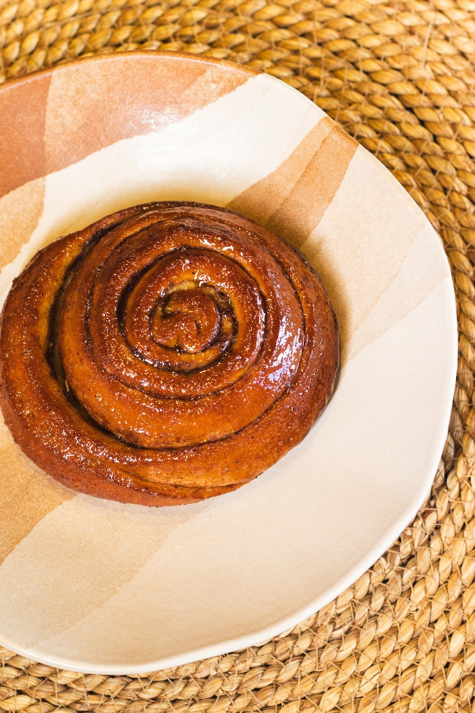
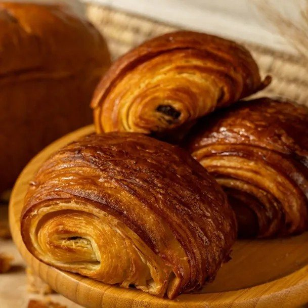
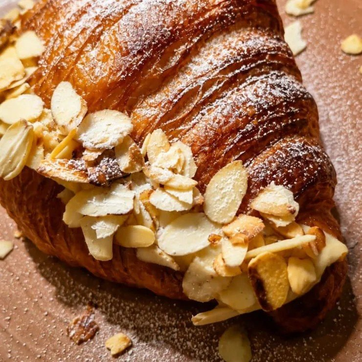

Sem fornada especial no cardápio. Sourdough, baguete e focaccia de alecrim: confirme a vitrine do dia.
hojeSeg a sex 8h–19h · sáb e dom 8h–13h
Padaria artesanal de fermentação natural · Pituba
Pão bom não tem atalho.
Sourdough, focaccias, croissants da massa folhada da casa e cafés especiais, na Rua das Hortênsias. Brunch no salão, retirada no balcão, encomendas e delivery próprio.
- 4,9201 avaliações no Google
- 94itens no cardápio
- 5 diascom fornada especial
Fermentação naturalLevain, farinha, água e sal
Seg a sex, 8h–19hSábado e domingo, 8h–13h
Salão, retirada e deliveryBrunch e cafés na padaria
EncomendasRetirada agendada e caixas de presente
Por onde começar
Na vitrine, na mesa ou na sua casa.
Cardápio
Os 94 itens, com preço
Pães, viennoiserie, brunch, cafés, doces, empório e presentes, com busca.
Abrir o cardápioFornadasQual pão sai hoje
Terça e quinta tem focaccia; sexta, integral e ciabatta; sábado, o de gorgonzola e damasco.
Ver o quadroNo salãoBrunch e cafés
Tostada, cuscuz com ovo, bowl, métodos de café e as receitas do Carlos.
Ver o salãoEncomendasPresentes e pizza de 72h
Caixas de presente, retirada agendada e a pizza de sexta, só por encomenda.
EncomendarQuadro de fornadas
Cada pão tem o seu dia.
No cardápio da casa, os dias estão escondidos no nome de cada pão. Aqui eles viram um quadro da semana, com o dia de hoje marcado. Toque em “+” para pôr na sacola.
- Focaccia de gorgonzola e nozes
- Focaccia de tomate e alecrim
- Ciabatta italiana
- Sourdough de parmesão e alecrim
- Focaccia de gorgonzola e nozes
- Focaccia de tomate e alecrim
- Pão francês de fermentação natural
- Ciabatta italiana
- Sourdough 100% integral
- Sourdough de parmesão e alecrim
- Roll de copa lombo e parmesão
- Pizza de 72 horas (encomenda, 14h)
- Sourdough de gorgonzola, nozes e damasco
Sem fornada especial no cardápio. Sourdough, baguete e focaccia de alecrim: confirme a vitrine do dia.
hojeDias de fornada tirados dos nomes dos itens no cardápio Takeat (08/10/2026). Pão sem dia marcado, como o sourdough tradicional e a baguete, depende da vitrine: confirme pelo WhatsApp.
Da vitrine
Massa folhada da casa, croissant que derrete na boca.

Viennoiserie
Croissant Tradicional
“Derrete na boca, feito com a massa folhada da casa.” R$ 12,90

Viennoiserie
Danish de Gorgonzola e Nozes
O contraste do gorgonzola e a crocância das nozes, na massa folhada. R$ 18,90

Pão doce
Cinnamon Roll
Massa de brioche envolta na calda de canela e açúcar. R$ 17,90

Na vitrine
Pain au Chocolat
Massa folhada envolvendo gotas de chocolate 70% amargo. R$ 20,50

Docinho
Croissant com Amêndoas
Recheado com creme de pâtisserie e amêndoas tostadas por cima. R$ 17,90
Na vitrine
Sonho da Talli
Mini brioche recheado de goiabada, doce de leite ou creme de pâtisserie. R$ 4,90


Brunch e cafés no salão
Uma mesa na padoca, com o pão da casa no centro.
“A gente adora se ver pelo olhar dos nossos clientes 🤎 seja quando estão aqui na nossa padoca, ou quando chegamos direto na casa de quem põe o nosso pão no centro da mesa.”@datalli.padaria, 29/09/2026O brunch e os cafés inteiros →
Encomendas e presentes
Uma caixa de pão para dar de presente.
A Da Talli monta caixas para datas especiais e vende a caixa vazia, média ou grande, para você encher com o que quiser da vitrine. A pizza de 72 horas de fermentação sai às sextas, às 14h, só por encomenda.
- Caixa de presente médiaR$ 20,00
- Caixa de presente grandeR$ 25,00
- Pizza 72h · sexta, 14hR$ 35,00 + sabor

4,9★★★★★201 avaliações no Google
Quem já passou por lá
“Pão delicioso, cheiro maravilhoso e ambiente acolhedor.”
Comida muito boa e um dos poucos lugares de Salvador que têm café de verdade.
Tudo que pedimos está Maravilhoso desde os pães, passando pelos doces e o cafe!
Pão delicioso, cheiro maravilhoso e ambiente acolhedor.
Trechos de avaliações de 5 estrelas exibidos na ficha do Google da Da Talli, lidos em 08/10/2026. Nota 4,9 com 201 avaliações.
Fotos da casa
Miolo aberto, crosta escura, pão na grade.
Monte sua sacola
Escolha, diga como quer receber e mande pelo WhatsApp.
Tudo que tem “+” no site entra na mesma sacola. A mensagem chega no WhatsApp da Da Talli já organizada, sem comissão de aplicativo.
Como você quer receber
Retirada no balcão no mesmo dia: a casa separa o pedido depois do pagamento.
- EscolhaPães, folhados, doces e empório.
- Retirada, data ou deliveryNa encomenda, o site mostra a fornada do dia escolhido.
- EnvieA mensagem sai pronta para o (71) 99996-6898; a casa confirma com o pagamento antecipado.
Da vitrine para a sacola
- Sourdough tradicional600 g · fermentação naturalR$ 29,90
- Baguete tradicional280 gR$ 14,90
- Focaccia de alecrimazeite e sal marinhoR$ 14,90
- Croissant tradicionalmassa folhada da casaR$ 12,90
- Cinnamon rollmassa de briocheR$ 17,90
- Croissant com amêndoascreme de pâtisserieR$ 17,90
- Brioche de forma400 g · maturado a frioR$ 27,90
- Geleia de frutas vermelhasartesanalR$ 12,50
Como receber
Balcão, encomenda ou delivery próprio.
Retirada no balcão
Para o mesmo dia: depois do pagamento, a casa separa o pedido para retirar na loja. Cerca de 20 minutos, segundo o cardápio digital.
Encomenda agendada
Para retirar numa data programada, confirmada depois do pagamento. A pizza de 72 horas é só por encomenda.
Delivery próprio
Pelo cardápio digital da casa, com pedido mínimo de R$ 60,00 e frete pela distância. Também está no iFood.
Pagamento
Pix, vale-refeição e vale-alimentação aparecem no cardápio digital. O pedido é confirmado com o comprovante do pagamento antecipado, pelo WhatsApp.
Horário da padaria
Segunda8h às 19h
Terça8h às 19h
Quarta8h às 19h
Quinta8h às 19h
Sexta8h às 19h
Sábado8h às 13h
Domingo8h às 13h
Rua das Hortênsias, 288 · Pituba, Salvador · BA · 41810-010
Endereço, mapa e fotosPerguntas
Antes de passar na padaria
Qual o horário?
Segunda a sexta, das 8h às 19h; sábado e domingo, das 8h às 13h, como publicam a ficha do Google e o Instagram da casa (06/10/2026).
Todo pão sai todo dia?
Não. Alguns têm dia certo: focaccias de gorgonzola e de tomate às terças e quintas, ciabatta e sourdough de parmesão às quartas e sextas, integral e roll de copa lombo às sextas, pão francês às quintas e o sourdough de gorgonzola, nozes e damasco aos sábados.
Dá para comer na padaria?
Sim. A casa atende no salão, com brunch e cafés especiais. Não há reserva de mesa divulgada.
Tem delivery?
Tem o delivery próprio pelo cardápio digital da casa (pedido mínimo de R$ 60,00, frete pela distância) e o iFood. Pela sacola deste site, o pedido vai direto para o WhatsApp.
Como pago?
O pedido é confirmado com o comprovante do pagamento antecipado, enviado pelo WhatsApp. No cardápio digital aparecem Pix e vales-refeição.
Fazem encomenda e presente?
Sim: retirada em data agendada, caixas de presente (a caixa média sai a R$ 20,00 e a grande a R$ 25,00) e a pizza de 72 horas, às sextas.
Passe em casa
Tem fornada saindo na Rua das Hortênsias.
Segunda a sexta, das 8h às 19h; sábado e domingo, das 8h às 13h. Brunch no salão, retirada, encomendas e delivery próprio.